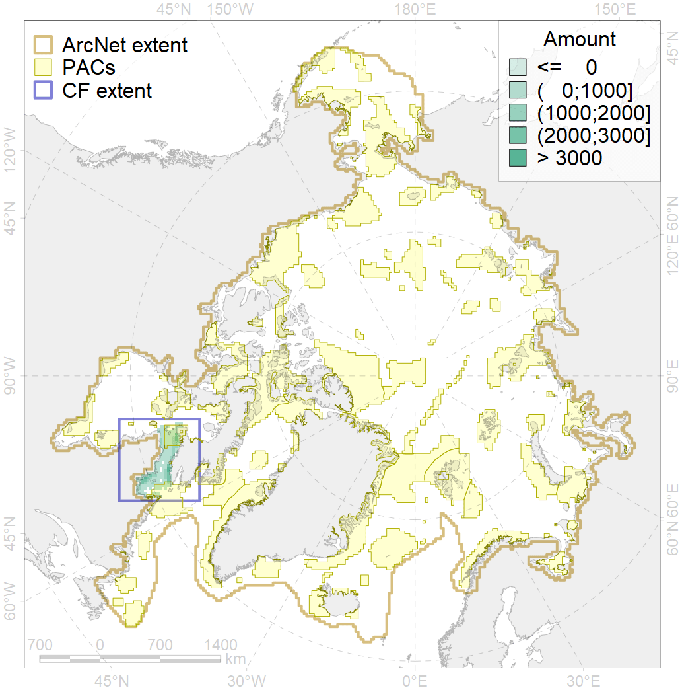
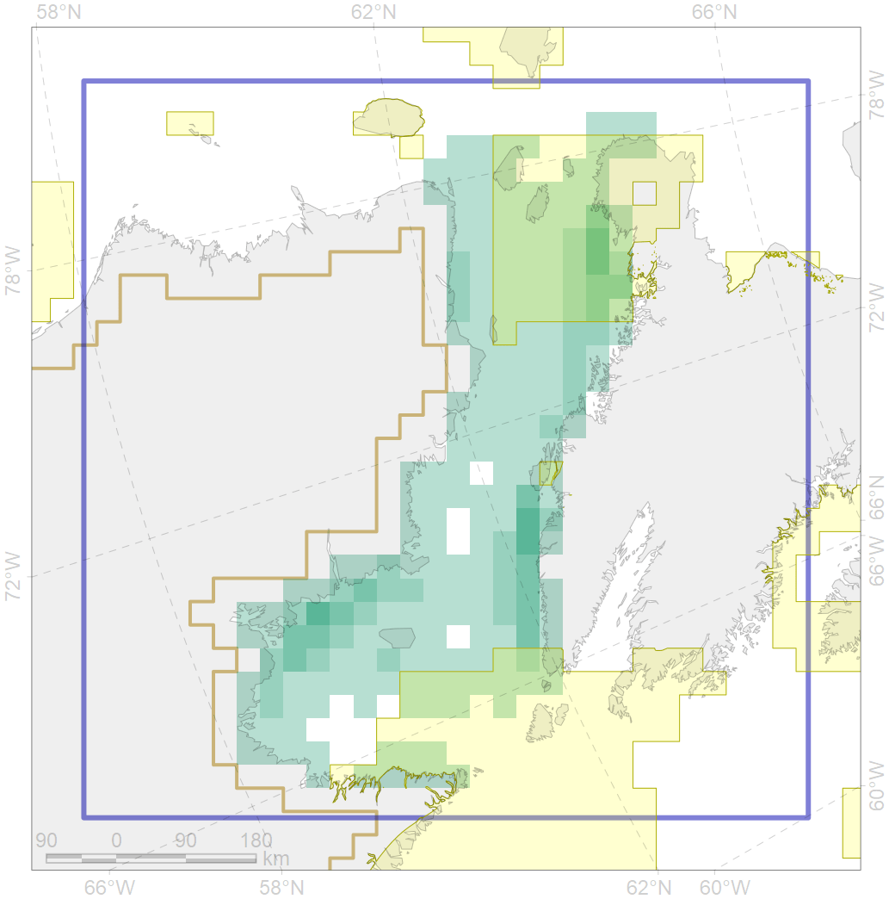

3131

| CF code | 3131 |
| CF name | Polynyas distribution in the Hudson Strait region |
| Time Period | 1998 – 2018, adopted for recent changes |
| Source(s) | AARI ice charts, CIS ice charts |
| Seasonality | Spring |
| Depth Horizon | Sea level (0m) |
| Methodology | Timeseries analysis for spatial locals |
| Use Restrictions | Joined terms of data licenses, copyrights, restrictions, terms of use, disclaimers, etc. No additional terms from data contributor. |
| Author Name | Nikita Platonov |
| Notes | |
| Scenario’s Target | 0.12 |
| Target Achievement | 0.318 (Scenario: 264.9%) |
| PAC | Share of the Total Amount within the PAC | Share of the Target Achievement for the ArcNet | PAC’s Contribution to the Target Achievement |
|---|---|---|---|
| 73 | 25.3%25.5% | 195.1%196.5% | 73.7%74.2% |
| 75 | 0.3%0.3% | 1.6%2.1% | 0.6%0.8% |
| 76 | 2.1%2.2% | 14.5%14.8% | 5.5%5.6% |
| inner | 27.7%28.0% | 211.2%213.4% | 79.7%80.6% |
| outer | 72.3%77.5% | 53.7%92.6% | 20.3%34.9% |
| † supplement values are for area consistence whereas principal values are for Accenter compatible gridded stats |